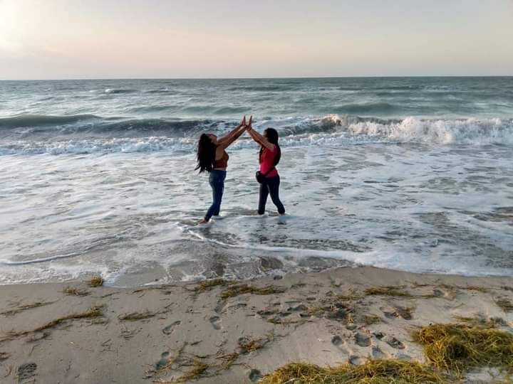
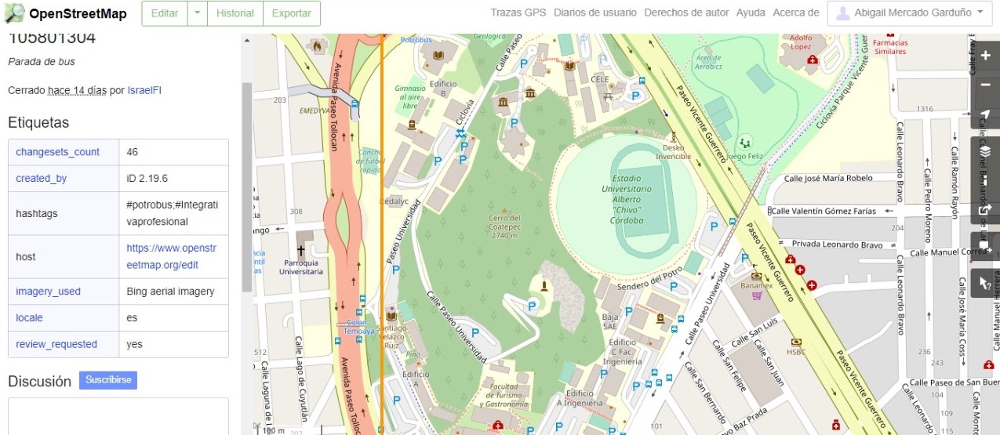

Una pequeña parte de mi vida
¿QUIÉN SOY?.
Mi nombre es Abigail Mercado Garduño, nací en Toluca de Lerdo el día 20 de Abril del año 2000, actualmente curso el sexto semestre de la licenciatura de Geoinformática en la Universidad Autónoma del Estado de México dentro de la facultad de Geografía. En cuanto a mi vida, tengo 3 hermanas llamadas Kenia (la mayor), Lizeth y Ximena ellan han sido de gran apoyo en mi vida, ¡claro tambien mis padres, Araceli y Erasmo! que han sido una gran motivación por estar aqui para que se sientan orgullosos de las hijas que tienen, no hay palabras para explicar el amor que les tengo, son lo mejor que tengo en mi vida, mis papás y mis hermanas.
MI EXPERIENCIA ESTUDIANDO GEOINFORMÁTICA
En el transcurso de la licenciatura he tenido tanto como dificultades
como tambien grandes experiencias, pues en lo personal
se me ha complicado algunos temas, pero con la ayuda de mis
compañeros y profesores he podido superar esas pruebas
me llorado tanto como de decepcion de mi misma como de alegría al ver
que mi programa se ejecute correctamente.
En las clases en línea se me ha complicado bastante, pues si tengo algun
problema es dificil que mi profesor y profesora
me ayuden de manera rápida, pero fuera de todo lo bueno y lo malo me
esta gustando la licenciatura, se que podré
llegar muy lejos. Siempre hay que dar la mejor versión de nosotros
en todo lo que hagamos.
Durante la licenciaturahe conocido a personas maravillosas, que han estado
para mi y me han apoyado, incluso gracias a las practicas de campo nos hemos
dado la tarea de conocer a las personas que nos rodean de una forma en la que
pocas personas las han visto, conocer ¡hasta como duermen!, agradezco
infinitamente a esas personas que han estado para mi incondicionalmente.

INTEGRATIVA PROFESIONAL
En cuanto a la materia de integrativa profesional he adquirido bastantes conocimientos y experiencias, durante el sexto semestre estoy realizando un mapeo de las rutas de potrobus al navegacion por la aplicacion de Open street maps, esto tambien me puede ayudar para adquirir experiencia en este campo, tambien ver cuales son con exactitud cuales son las aparadas exactas para que los usuarios del potrobus no tengan inconvenientes en cuanto a eso.
La importancia de la materia de Integrativa profesional tiene como objetivo observar, analizar y aplicar nuestros conociemitmnos que hemos estado adquiriendo a traves de nuestra carrera universitaria, preparandonos para nuestro futuro laboral como Geoinformática.
